SECCIÓN 4D
FRENOS DE DISCO DELANTEROS
ESPECIFICACIONES
Especificaciones generales
| Aplicación | Unidad | Descripción |
| Rotor | Diámetro exterior | mm (pulg.) | 236 (9.3) |
| Espesor | mm (pulg.) | 12.7 (0.5) |
| Espesor de descarte | mm (pulg.) | 10 (0.4) |
| excentricidad | mm (pulg.) | 0.05 (0.002) |
| Calibrador | Espesor de las pastillas | mm (pulg.) | 10 (0.40) |
| Espesor de descarte de las pastillas | mm (pulg.) | 8 (0.31) |
| Diámetro de posición | mm (pulg.) | 48 (1.89) |
Especificaciones de apriete
| Aplicación | N•m | Árbol de transmisión izquierdo | Articulación |
| Tornillos del rotor | 65 | 48 | - |
| Tornillos de fijación de la pinza de freno | 95 | 70 | - |
| Tornillos pasadores | 26 | 19 | - |
| Tornillo de acoplamiento del manguito de freno | 26 | 19 | - |
| Tornillo de purga | 6 | - | 53 |
DIAGNÓSTICO
Frenos de disco delanteros
Estado | Causa probable | Medida correctora |
Frenado desigual | Soporte inoperativo. | Sustituya el soporte. |
Pistón de la pinza de freno agarrotado. | Repare el pistón de la pinza de freno o sustituya el conjunto de la pinza si fuera necesario. |
Arrastre de frenos | Pistón de la pinza de freno agarrotado. | Repare el pistón de la pinza de freno o sustituya el conjunto de la pinza si fuera necesario. |
Ruidos y vibraciones al aplicar el freno | Excesiva excentricidad del rotor. | Sustituya el rotor. |
Interferencia con el guardapolvo. | Repare el guardapolvo. |
Afloje los tornillos de fijación de la pinza de freno. | Apriete los tornillos de fijación. |
Control de forros
- Levante y apoye el vehículo adecuadamente.
- Desmonte las ruedas delanteras. Consulte la Sección 2E, Neumáticos y ruedas.
- Compruebe visualmente el espesor mínimo y el desgaste de los forros de freno.
- Mida el espesor.
Importante: El espesor mínimo de la zapata y el forro en conjunto es de 8 mm (0,31 pulg.).
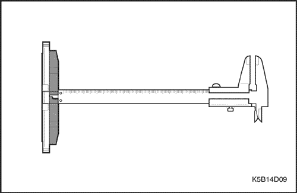


- Monte la zapata y los forros únicamente en conjuntos de eje.
- Monte la ruedas delanteras. Consulte la Sección 2E, Neumáticos y ruedas.
- Baje el vehículo.
Control del rotor
La variación del espesor puede comprobarse midiendo el disco de freno en cuatro o más puntos alrededor de la circunferencia del mismo. Todas las mediciones deben efectuarse a la misma distancia del borde del disco.
Si el espesor del rotor es inferior a 10 mm (0,40 pulg.), sustituya el rotor.
Durante su fabricación, se mantienen de forma muy estricta las tolerancias de la superficie de frenado y del disco de freno en cuanto a planeidad y excentricidad lateral. Por tanto, es necesario mantener estas tolerancias en dicha superficie para evitar frenadas irregulares.
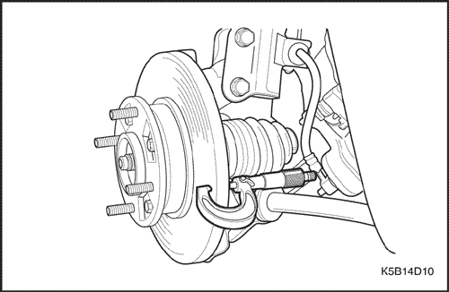
Además de estas tolerancias, el acabado superficial debe mantenerse dentro de la gama especificada. El control de este acabado superficial resulta necesario para evitar tirones y un comportamiento errático, así como para incrementar la vida de los forros.
Utilizando un comparador comercial, compruebe la excentricidad lateral como sigue:
Aviso: La excentricidad lateral permitida como máximo es de 0,05 mm (0,002 pulg.). Si la excentricidad lateral supera este valor, asegúrese de que no hay suciedad entre el rotor y el cubo y que las superficies de contacto están lisas y que no tienen rebabas.
- Coloque la caja de cambios en punto muerto.
- Desmonte el disco de freno. Consulte el apartado "Disco" de esta sección.
- Sujete un reloj comparador al conjunto soporte.
- Ajuste palpador del comparador a unos 10 mm (0,4 pulg.) del borde exterior del rotor, perpendicular al disco y con una ligera precarga.
- Retire el reloj comparador.
Importante: Dado que es necesario ejercer un control de precisión sobre las tolerancias del disco de freno para garantizar un comportamiento adecuado de los frenos de disco, el rectificado de este disco debe realizarse sólo con un equipo de precisión.
- Rectifique el disco de freno, si fuera necesario, con un equipo de precisión. Deseche el disco si no cumple las especificaciones anteriores después del rectificado.
- Monte el disco. Consulte el apartado "Disco" de esta sección.
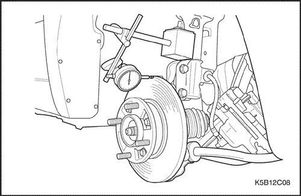
LOCALIZADOR DE COMPONENTES
FRENOS DE DISCO DELANTEROS
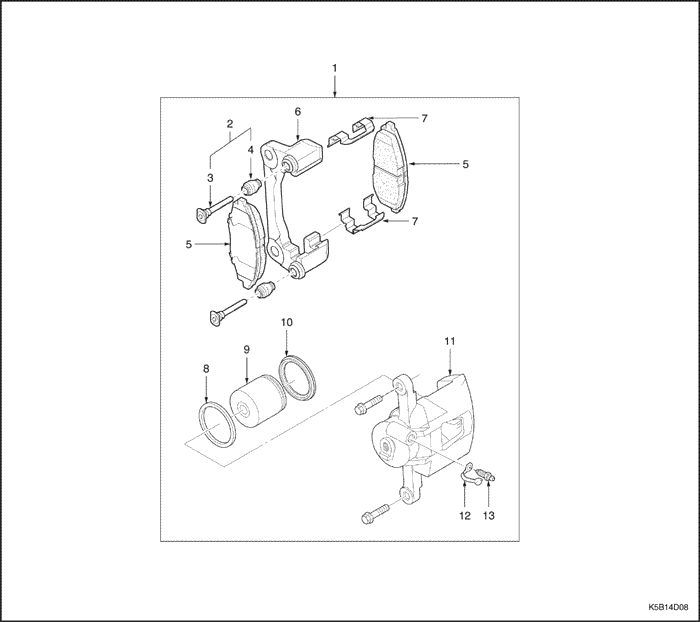
- Conjunto de la pinza de freno delantero
- Conjuntos de los guardapolvos de freno delantero
- Pasadores
- Guardapolvos de los pasadores
- Pastillas de freno delantero
- Soporte
- Muelle de pastilla
- Guardapolvo del pistón
- Pistón
- Junta del pistón
- Cilindro
- Tapa del tornillo de purga
- Tornillo de purga
MANTENIMIENTO Y REPARACIÓN
servicio con vehículo en marcha
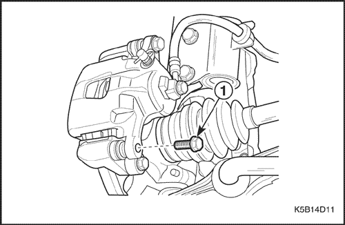
Zapata y forro
Procedimiento de desmontaje
- Desmonte las ruedas delanteras. Consulte la Sección 2E, Neumáticos y ruedas.
- Desmonte las pastillas de freno.
- Quite el tornillo pasador (1).
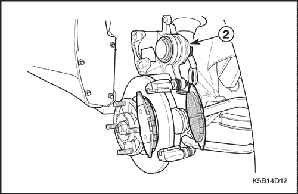
- Levante el conjunto del cilindro (2).
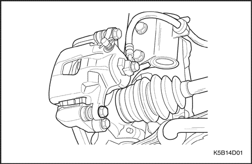
procedimiento de montaje
- Monte las pastillas de freno y el conjunto del cilindro con el tornillo pasador.
Apretar
Apriete el tornillo pasador hasta 26 N•m (19 lb-pie).
- Monte la ruedas delanteras. Consulte la Sección 2E, Neumáticos y ruedas.
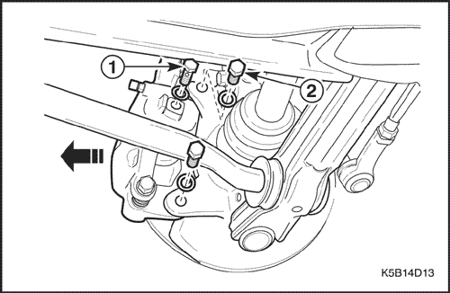
Conjunto de calibrador
Procedimiento de desmontaje
- Desmonte las ruedas delanteras. Consulte la Sección 2E, Neumáticos y ruedas.
- Desmonte el conjunto de la pinza de freno.
- Ponga el tornillo de acoplamiento del manguito de freno (1).
- Tape la abertura del manguito de freno para evitar la pérdida de líquido o la entrada de suciedad.
- Quite los tornillos de fijación del de la pinza de freno (2).
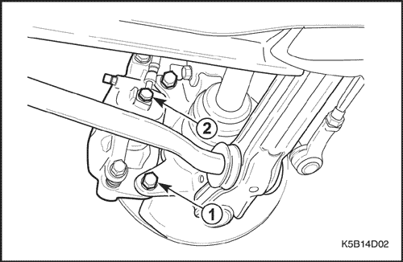
procedimiento de montaje
- Monte el conjunto de la pinza de freno con sus tornillos (1).
Apretar
Apriete los tornillos que unen la pinza de freno a la mangueta hasta 95 N•m (70 lb-pie).
- Conecte el manguito de freno (2).
Apretar
Apriete el tornillo que une el rácor de entrada del manguito de freno a su acoplamiento hasta 26 N•m (19 lb-pie).
- Monte la ruedas delanteras. Consulte la Sección 2E, Neumáticos y ruedas.
- Purgue el sistema de frenos. Consulte la Sección 4A, Frenos hidráulicos.
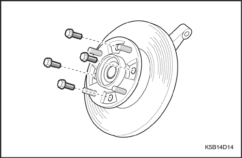
Rotor
Procedimiento de desmontaje
- Desmonte la mangueta. Consulte la sección 2C, Suspensión delantera.
- Quite del cubo de la rueda los tornillos del rotor.
- Desmonte el disco de freno. Consulte la sección 2C, Suspensión delantera.
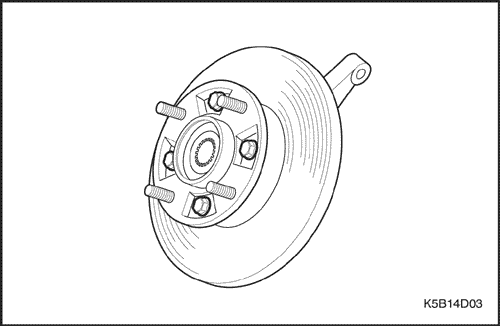
procedimiento de montaje
- Monte el rotor en cubo de la rueda delantera apretando los tornillos de retención.
Apretar
Apriete los tornillos de retención que unen el rotor al cubo de la rueda delantera hasta 65 N•m (48 lb-pie).
- Monte la mangueta. Consulte la sección 2C, Suspensión delantera.
REPARACIÓN DE LA UNIDAD
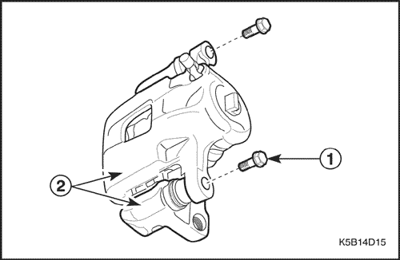
Mantenimiento de calibrador
procedimiento de desmontaje (desarmado, desensamble, desensamblaje)
- Desmonte el conjunto de la pinza de freno. Consulte el apartado "Conjunto de la pinza de freno" de esta sección.
- Separe el conjunto del cilindro y el soporte.
- Quite los tornillos pasadores (1).
- Separe el conjunto del cilindro y el soporte (2).
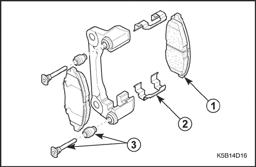
- Desmonte el soporte.
- Desmonte el conjunto de pastillas del freno delantero (1).
- Quite los muelles (2).
- Desmonte los pasadores guía y los guardapolvos (3). Consulte el apartado "Zapata y forro" en esta sección.
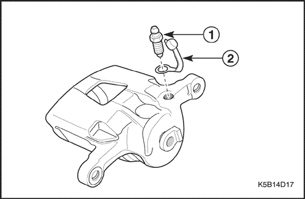
- Quite el tapón de purga (1)
- Quite la tapa del tapón de purga (2).
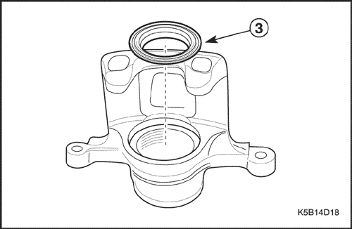
- Desmonte el guardapolvo del pistón (3).
Precaución: No se coloque de cara al punto de desmontaje.
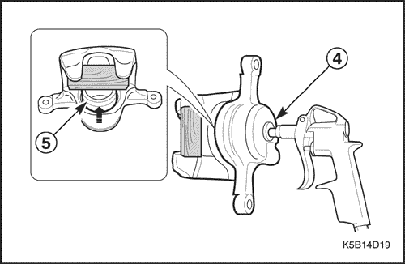
- Utilizando aire comprimido, expulse el pistón del cilindro (4).
- Desmonte el pistón (5).
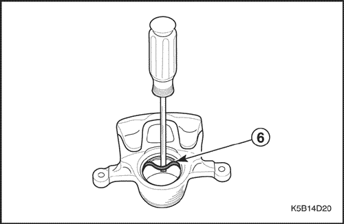
- Retire la junta del pistón (6).
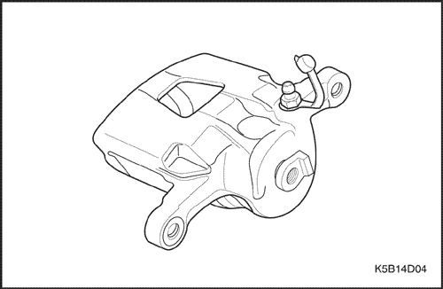
Procedimiento de montaje (armado, ensamblaje)
Importante: Limpie todas las piezas con alcohol desnaturalizado. Séquelas con aire comprimido sin aceite en su contenido.
Importante: Importante: Lubrique el pistón con líquido de frenos.
- Monte el conjunto del cilindro.
- Monte la junta del pistón.
- Empuje el pistón hacia adentro hasta que se asiente correctamente.
- Monte el guardapolvo del pistón.
- Monte el tapón de purga.
Apretar
Apriete el tapón de purga hasta 6 N•m (53 lb-pulg.).
- Ponga la tapa del tapón de purga.
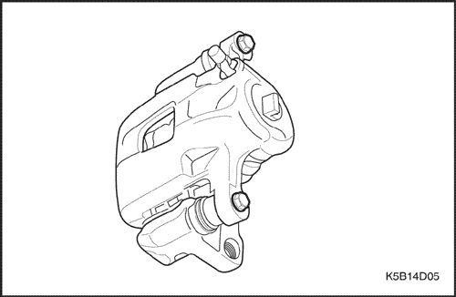
- Monte el soporte.
- Ponga el pasador guía y el guardapolvo.
- Monte el muelle.
- Monte las pastillas.
- Ponga el tornillo pasador que conecta el conjunto del cilindro y el soporte.
Apretar
Apriete el tornillo pasador hasta 26 N•m (19 lb-pie).
- Monte el conjunto de la pinza de freno. Consulte el apartado "Conjunto de la pinza de freno" de esta sección.
DESCRIPCIÓN GENERAL Y FUNCIONAMIENTO DEL SISTEMA
Conjunto del calibrador de frenos de disco
Esta pinza de freno dispone de un agujero único y va montada en la mangueta con dos tornillos de fijación. La presión hidráulica que se crea al pisar el pedal de freno se convierte, por la acción de esta pinza, en una fuerza de detención. Esta fuerza actúa igualmente contra el pistón y contra la parte inferior del interior de la pinza para desplazar el pistón hacia fuera y hacer que se deslice la pinza hacia dentro, ejerciendo una acción de pinza sobre el disco de freno. Esta acción de pinza fuerza los forros contra el disco de freno, creando un rozamiento capaz de parar el vehículo.
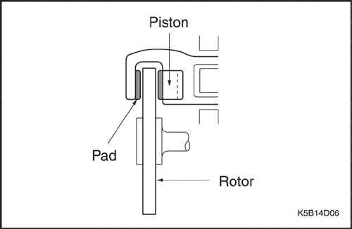
Importante:
- Sustituya todos los componentes incluidos en los kit de reparación utilizados para reparar la pinza de freno.
- Lubrique las piezas de goma con líquido de frenos limpio para facilitar su montaje.
- No utilice aire comprimido del taller, con un cierto contenido de aceite, en las piezas del freno, ya que se pueden ocasionar daños a los componentes de goma.
- Si se desmonta o se desconecta cualquier componente del sistema hidráulico, puede resultar necesario tener que purgar la totalidad o una parte del sistema de frenos.
- Sustituya las pastillas únicamente en juegos por eje.
- Los valores de los pares de apriete especificados son para elementos de sujeción secos y sin lubricar.
- Efectúe las labores de reparación en un banco limpio y sin ningún material que tenga aceite mineral.
Calibrado de la holgura
Cuando se aplica presión hidráulica al pistón, el pistón se desplaza hacia la izquierda. La junta del pistón, que expande bastante presión contra el pistón, se mueve con el cilindro.
Sin embargo, como una pieza de la junta del pistón va fijada en una ranura del cilindro, tal y como se muestra en el dibujo de abajo, la junta se deforma hacia la dirección en que se mueve el cilindro.
Cuando se deja de presionar el pedal de freno y el pistón es liberado de la presión hidráulica, se genera en la junta una fuerza elástica de recuperación que empuja al pistón hacia la derecha y lo restablece a su posición original.
Al desgastarse las pastillas y aumentar la holgura de éstas respecto al rotor, aumenta el recorrido del pistón.
Entonces, la junta puede deformarse aún más, sin embargo, dado que el extremo de la junta va fijado a la ranura del cilindro, el grado de deformación es el mismo que el mencionado anteriormente.
El pistón se desplaza más aún para cubrir la distancia de holgura. Cuando el pistón recorre de vuelta la misma distancia y la junta de goma recupera su forma original, la holgura entre el rotor y las pastillas se restablece a su estado original.
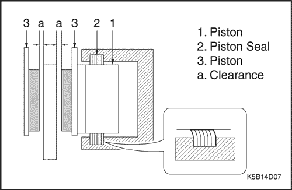